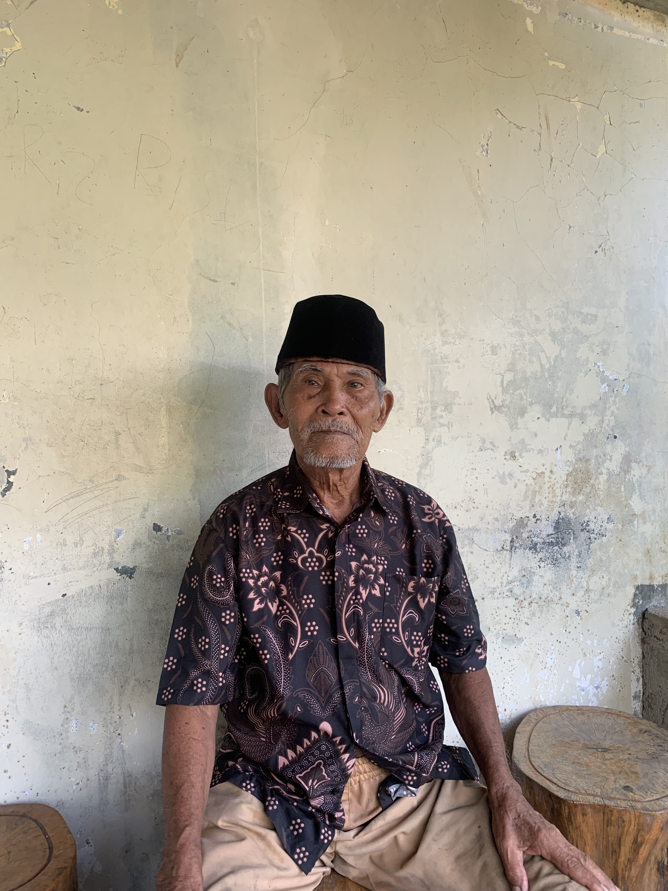

Sejarah Larangan dan Kepercayaan Masyarakat
Sumber: Marjantana
Seiring berjalannya waktu adat semakin berkembang. Salah satu yang menarik adalah larangan melakukan pemotongan hewan pada hari Senin. Hari tersebut dianggap sebagai hari tidak baik karena bersamaan dengan kejadian peristiwa wafatnya seorang bupati pada hari Senin di masa itu. Sejak saat itu, kepercayaan berkembang bahwa hari Senin kurang baik untuk penyembelihan hewan. Hal ini juga termasuk pada saat hari Idul Adha di hari Senin, maka penyembelihan akan dilakukan dilain hari kecuali jika memang hewan tersebut sedang berada dalam kondisi tidak baik maka penyembelihan dapat dilakukan di hari Senin.
Balai Desa, Logandu, Karanggayam, Kebumen.
Minggu, 17 Agustus 2025